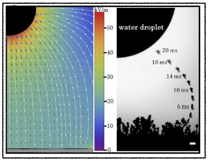

Ranit Mukherjee
Soft Matter, Experimental
Prologue
Through experiments on droplets, frost, fluid interfaces, and non-Brownian particles, I try to understand how simple physical interactions drive complex phenomena in nature and engineering applications. My goal is to design analogs of complex natural systems and processes, and probe them to gain a fundamental physical understanding.
I completed my PhD in Engineering Mechanics from Virginia Tech, Blacksburg, USA under the guidance of Prof. Jonathan Boreyko and have a postdoctoral experience with Prof. Sungyon Lee at the University of Minnesota, Twin Cities, USA.
My research draws inspiration from technological challenges, biological systems, and ecological questions. I work with collaborators across disciplines, from plant pathologists uncovering how jumping dew droplets spread disease to engineers at Rolls-Royce developing new de-icing strategies. Explore the Research Stories below to see how these collaborations come to life.
Background at a glance
Research Stories
Stretching the fingers: Effects of particles in Saffman-Taylor Instability
Published in Soft Matter, September 2025
The classical Saffman–Taylor instability commonly occurs during drainage from a porous medium, such as a column of bone charcoalHill, Chem. Engg. Sci., 1952. As the equations for flow through porous media also apply to the fluid flow within a thin gap, the laboratory experiments on viscous fingering is usually performed within Hele-Shaw channels. As the equations for flow through porous media also apply to fluid flow within a thin gap, laboratory experiments on viscous fingering are typically performed within Hele-Shaw channels. In the classic experiments, drainage of a denser fluid from a vertical channel is stable if the drainage speed is lower than a critical value. Beyond this, the interface becomes unstable, producing the familiar blunt finger-like patterns at the interface.
By adding a tiny amount (volume fraction of 5%) of non-Brownian solid particles in the draining oil, new behavior emerged. Between the stable and unstable interface, under high confinement, thin particle-laden filaments sprouted from the receding interface. The particles, nearly the same size as the channel depth, moved slower than the fluid, deforming the interface and creating entirely new particle-driven instabilities. A simple scaling model, balancing hydrodynamic drag on a single particle with interfacial forces, captured the onset of these particle-scale instabilities. These experiments show how microscopic particle dynamics can dictate emergent macroscopic interfacial patterns, a concept I plan to explore further in my research program.
The physics of phase change in granular rafts
Published in Physics of Fluids, August 2025, February 2023
When a dense monolayer of particles sits at the boundary between two fluids, it achieves a remarkable elasticity due to the particle-particle contact and the interfacial tension between the fluidsVella, Aussilious, and Mahadevan, EPL, 2004. When compressed, this granular raft can wrinkle and buckle much like a thin elastic film. However, our 2023 study showed that under specific conditions, compression results in individual particles popping out of the interface. Traditional continuum models can capture the collective wrinkling but miss the phase transition to granular expulsion, leaving open the question of what determines buckling or granular breakup.
Wrinkling in a granular raft under compression. To uncover this, we developed an energy-based model, which predicts that the raft’s failure mode depends on a simple energetic competition: whether it costs more energy to detach a particle from the interface or to buckle the interface as a whole. Guided by this, we found that this energy balance can be tuned not only by changing particle size or wettability, but also by modifying surface textures and interfacial chemistry. The result is a predictive phase map for engineering adaptive, reconfigurable materials that bridge the physics of soft interfaces and granular mechanics.
Lift off and crashing back: The surprising end of jumping-droplet condensation
Published in Joule, May 2019
In any heat transfer device, the condenser surface inevitably becomes covered with tiny water droplets. Removing this water is an engineering design challenge as it blocks efficient heat transfer.  Jumped droplets may return on an upside down surface, being caught in the incoming vapor stream.On ordinary metal surfaces, these droplets merge and eventually grow large enough to roll off under gravity, provided the surface is at an angle other than horizontal. Superhydrophobic surfaces offer a clever alternative: their extremely low adhesion allows the excess surface energy released during merging to be converted into an out-of-plane velocity. This is the basis of jumping-droplet condensation, one of most efficient modes of condensationWang et al., Nano Letters, 2012 discovered to date.
Jumped droplets may return on an upside down surface, being caught in the incoming vapor stream.On ordinary metal surfaces, these droplets merge and eventually grow large enough to roll off under gravity, provided the surface is at an angle other than horizontal. Superhydrophobic surfaces offer a clever alternative: their extremely low adhesion allows the excess surface energy released during merging to be converted into an out-of-plane velocity. This is the basis of jumping-droplet condensation, one of most efficient modes of condensationWang et al., Nano Letters, 2012 discovered to date.
Yet, real surfaces are never perfect. Droplets pinned by surface defects can no longer jump after merging, resulting in surface flooding as condensation continues. A majority of the droplets will return at the end of jumping. Even surfaces in upside-down orientation can have returning droplets, driven by vapor flow entrainment near the surface. Our experiments (with two talented undergraduate researchers) reveal that, over more extended condensation periods (3 hours or more), tilted surfaces consistently outperform horizontal ones, where gravity lends a hand in clearing droplets and sustaining efficient heat transfer.

Plant pathogens piggybacking on jumped droplets
Published in Proceedings of the National Academy of Sciences, August 2021
What could a deadly wheat disease possibly have in common with jumping-droplet condensation? Quite a lot, as it turns out. Working with plant pathologists at Virginia Tech, we studied wheat leaves infected with Puccinia triticina, the fungus responsible for devastating leaf rust. Surprisingly, as these leaves are naturally superhydrophobic, dew droplets can jump off them (see the video below), carrying fungal spores along for the rideBoreyko et al., J. Royal Soc. Interface, 2019.
 A spore-laden droplet on a water-sensitive paper. To mimic a field transmission event in the lab, we attached an infected leaf to a Peltier stage to induce condensation. Then the leaf was surrounded with water-sensitive papers placed at different angles, emulating real crop conditions. Each time a jumped droplet landed, it left a blue mark on one of the papers in the array, allowing us to map how far and in what directions droplets could travel, along with a lower bound for the amount of droplet-laden spores being carried by wind. The results revealed that even the gentlest of breezes can enable the passive dispersal of pathogens through natural dew cycles. In other words, the same physics that makes droplets jump in engineered condensers may also help spread plant epidemics.
A spore-laden droplet on a water-sensitive paper. To mimic a field transmission event in the lab, we attached an infected leaf to a Peltier stage to induce condensation. Then the leaf was surrounded with water-sensitive papers placed at different angles, emulating real crop conditions. Each time a jumped droplet landed, it left a blue mark on one of the papers in the array, allowing us to map how far and in what directions droplets could travel, along with a lower bound for the amount of droplet-laden spores being carried by wind. The results revealed that even the gentlest of breezes can enable the passive dispersal of pathogens through natural dew cycles. In other words, the same physics that makes droplets jump in engineered condensers may also help spread plant epidemics.
Another jumping event, this time with frost
Published in ACS Nano, February 2021
This project began as what seemed like a failed frost experiment, or at least that’s what we thought. We were trying to find ways to delay frost formation on cold surfaces. In one experiment, when a small vial of liquid water was brought close to a frosted sample, the micrometer-scale dendrites began to twitch, fracture, and then leap toward the droplet as if pulled by an invisible force. A dendrite broken from the surface follows the non-uniform electric field formed by the water droplet and the frost sheet beneath.What started as a curious accident quickly turned into an entirely new line of research.
We traced the answer back to the atmospheric research works, majorly from 1940–60 and to classical electro-diffusion theories in iceLatham and Mason, Proc. Royal Soc. London, 1961. Based on this, a growing frost sheet undergoes a spontaneous charge separation process due to the differential mobility of its defects, resulting in the top part of the frost having a slightly negative charge. When we bring a polarizable liquid (e.g., water, ethyl alcohol, etc.) near this frost, an electric field is developed.
The simple table-top experiments could measure the amount of charge on a broken dendrite, corroborated by our collaborators via a much more involved electro-diffusion numerical model.
Epilogue
I am looking for a faculty role. In my independent program, I will take a deep dive into patterns in the natural world. We will design physical analogs for soil, cells, and tissues, utilizing my experience with granular materials, interfacial fluid mechanics, phase change processes, and years of experimental insights.
Connect with me through email, mranit33 at vt.edu